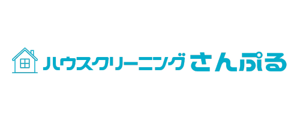
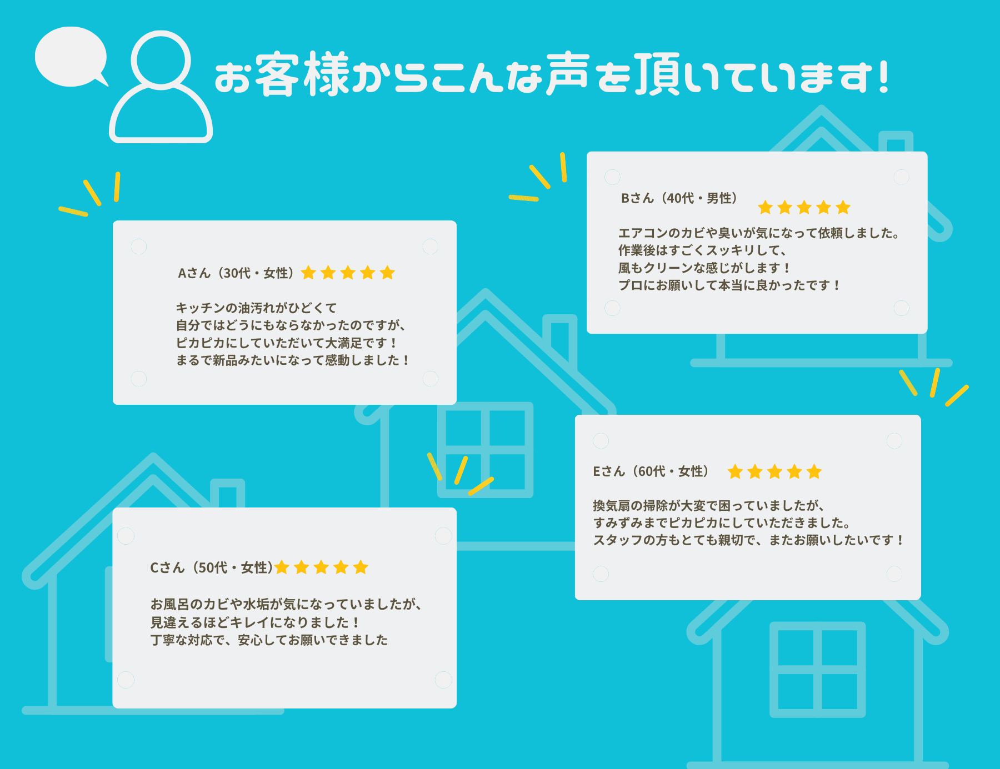
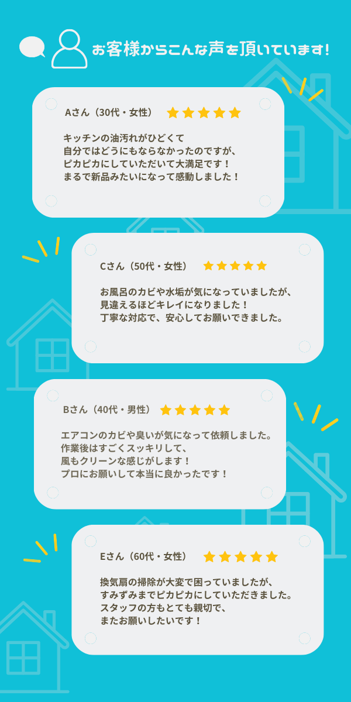

「ハウスクリーニングさんぷる」は、
お家をピカピカにするプロのクリーニングサービスのサンプルサイトです。
日々の掃除では落としきれない汚れや、プロの手でしっかり清潔にしたい場所を、
専用の機材と技術で丁寧にクリーニングいたします。
このサイトでは、実際のハウスクリーニングサービスを想定したデザイン・構成を体験 できます。
シンプルでわかりやすく、信頼感のあるデザインを意識し、お客様が安心してサービスを利用できるよう工夫しました。


| サービス内容 | 価格 |
|---|---|
| キッチンクリーニング | ￥15,000 |
| 浴室クリーニング | ￥13,000 |
| エアコンクリーニング | ￥13,000 |
| 換気扇・レンジフードクリーニング | ￥18,000 |
| トイレクリーニング | ￥11,000 |
| フロアクリーニング | ￥15,000 |
キッチン・浴室・トイレ・フロア・換気扇・エアコンなど、幅広く対応しています！プロの技で徹底的にキレイにします！
サービス内容ごとに料金が異なります。例えば、キッチンクリーニングは15,000円、エアコンクリーニングは13,000円です。
お電話またはWebフォームからご予約いただけます。「○○日までに掃除してほしい」などのご希望があればご相談ください！
作業内容によりますが、キッチンは約2時間、浴室は約1.5時間、エアコンは約1時間 などが目安です。事前に詳しい時間をご案内します！
キッチン・浴室は3〜6ヶ月に1回、エアコンは年2回が理想です。汚れがひどくなる前に定期的にクリーニングすると、キレイな状態が長持ちします！